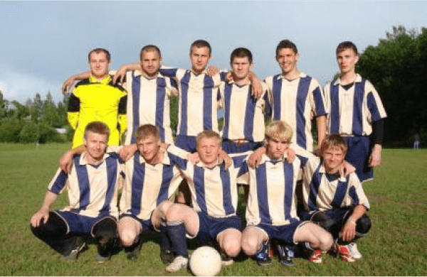

Футбольный клуб "Урожайная"
Кратко о нашем клубе
Футбольный клуб "Урожайная" основан в 2009 году в одноименной деревне Минского района Минской области Республики Беларусь.
Команда представляет, как Урожайную, так и соседние с ней города и села Минского района - Леонтьевичи, Сеницу, Юбилейный, Скориничи, Большевик, Старые Дороги, Боровляны, Новый Двор, Михановичи, Гатово и др.
ФК "Урожайная" проводит домашние матчи в агрогородке Сеница на стадионе "Пентагон".

Наши спонсоры